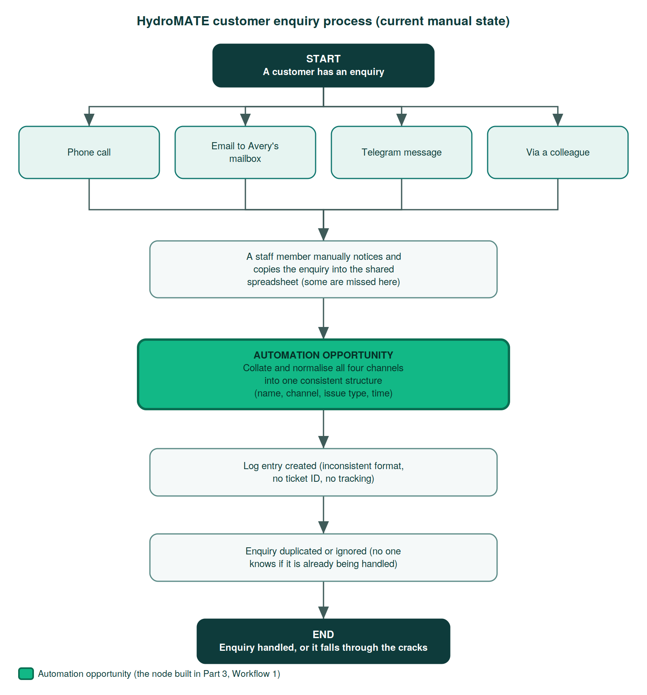

Holmesglen Institute — ICTCLD301, Certificate III in Information Technology (simulated client case study)
Acting as a cloud consultant for a simulated client engagement, ran a full evaluation cycle for a ticketing platform whose site was crashing during high-demand ticket on-sales — one on-sale stayed down for 90 minutes and pushed roughly 70% of that show's tickets to secondary resellers. Elicited requirements through a structured client meeting, evaluated cloud service models (IaaS/PaaS/SaaS) and three concrete platforms (Microsoft Azure, AWS, Render) against reliability, compliance and cost, then delivered a technical recommendation alongside a plain-language cost estimate for a non-technical CEO audience.
- Ran a structured client requirements meeting and produced a full requirements specification
- Evaluated cloud service and deployment models against reliability, compliance and budget constraints
- Compared Microsoft Azure, AWS, and Render on capability, cost model, and data residency
- Mapped the solution against the Privacy Act 1988, PCI DSS, and the ACSC Essential Eight
- Modelled 12-month total cost of ownership and translated it into a plain-language estimate for a CEO audience
Recommendation: Microsoft Azure App Service (auto-scaling) with a zone-redundant Azure Database for MySQL — a managed PaaS platform projected to absorb on-sale traffic spikes automatically for roughly $520–620/month with a reserved foundation, directly addressing the reliability failure at the centre of the brief.
Microsoft Azure
Cloud Architecture
Requirements Analysis
TCO Modelling
Compliance (Privacy Act / PCI DSS)
Holmesglen Institute — ICTAII401 / BSBTEC404 / ICTICT312, Certificate III in Information Technology (AI Automation & Cloud) (simulated client case study)
Acting as an automation consultant for a simulated client (HydroMATE, a scaling smart-bottle company), analysed a customer support process breaking down under four disconnected manual intake channels — phone, email, Telegram, and colleague referrals — which was producing duplicated and dropped enquiries and a rising "non-responsive support" complaint. Selected Customer Support for automation over a higher-volume alternative based on risk-weighted business impact rather than raw scaling relief, mapped the current-state process, and designed an automated intake-and-normalisation workflow feeding a single tracked, de-duplicated log.

- Identified and prioritised automation opportunities across business functions using risk-weighted, not just volume-based, analysis
- Mapped the current-state manual process end-to-end and diagrammed it
- Designed an automated multi-channel intake and normalisation workflow using Make, triggered via webhook
- Identified failure risks in the automated workflow (silent data loss, mis-mapped fields) and designed mitigations (field validation, error notifications)
- Built and delivered a structured business case pitch — problem, solution, benefits, risk, and a clear ask for stakeholder sign-off
Recommendation: Automate the multi-channel enquiry intake and normalisation step — the single point where four disconnected channels currently create duplicated and dropped enquiries — using a Make webhook-triggered workflow feeding one consistently structured, tracked log, while keeping final resolution of sensitive complaints with a human.
Make (Automation)
Process Mapping
Webhooks
Business Case Development
Risk Mitigation